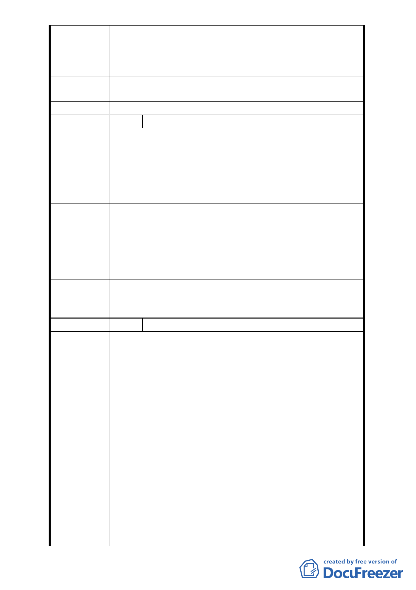

2. 或謂市地重劃要顧及財務可行性，建議依都市計畫法第
83 條之規定“公共設施保留地之取得，得用容積移轉方
式辦理”，應適當地、稍微提高本計畫中住宅區的容積
率，以為財務可行。共創居民、地主、北市府之三贏。
專案小組審
查結論
同陳情案 1
委員會決議 同陳情案 1
編
號 16
陳情人 紫藤樓社區管理委員會
1.依 98.06.19 日李慶元議員召開現場會勘協調會辦理。
2.本社區 14 層建築物之建照，係「華固建設公司」依現行
陳情理由
公園預定地規劃，作為申辦核准之依據，原案市府建管處
可查。
3.經李議員與市府相關單位協調後，本社區針對本案決議兩
方案並陳，請審議委員，惠予列入審查：
1. 第一案：建請維持原都市計畫之「公園用地」位置與面
積，不予縮減。
建議辦法
2. 第二案：若無法維持原都市計畫之「公園用地」位置與
面積，請維持新光路一段 66 巷以北為「公園用地」，以
符合當初本社區 14 樓層建照核發之法源依據，及維護住
戶生活環境品質。
專案小組審
查結論
同陳情案 1
委員會決議 同陳情案 1
編
號 17
陳情人 謝清榮
1. 基於貴惠於 6 月 30 日下午 2 點 30 分召開第 595 次委員
會議，討論第三案「變更臺北市文山區景美溪左岸(萬壽
橋至道南橋間)機關用地、公園用地、道路用地為第三種
住宅區、道路用地、公園用地細部計畫案」一案，由於
在之前公聽會辦理之後，大部分地主皆已同意此案之規
劃，並無填寫意見表，而未能到場聽取反對之意見，僅
有幾位地主代為傳達會議之內容，且表示其反對意見將
直接影響地主之權利。
陳 情 理 由 2. 巨中華民國 98 年 4 月 27 日府都規字第 09831431200 號
公開展覽內容表示此公共設施保留地自 69 年起即被劃
定，至今仍未開闢，本區也無需使用公共設施保留地，
且地主對於公開展覽之內容沒有異議，為何會因為周邊
紫藤樓居民之意見而影響本案地主之權利，更導致此案
實施時間要一延再延，是否主要有關係之地主的權利在
經由長時間未開發之延宕還得繼續承受這樣的損失？
3. 據公展內容，此計畫案之私有土地佔 98.3％，大部分地
主早期務農，並無法切確瞭解各個土地相關之法令，經
- 14 -